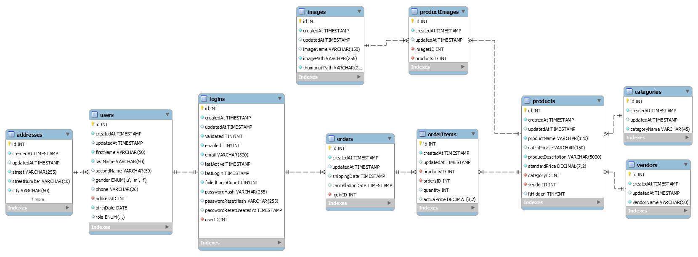
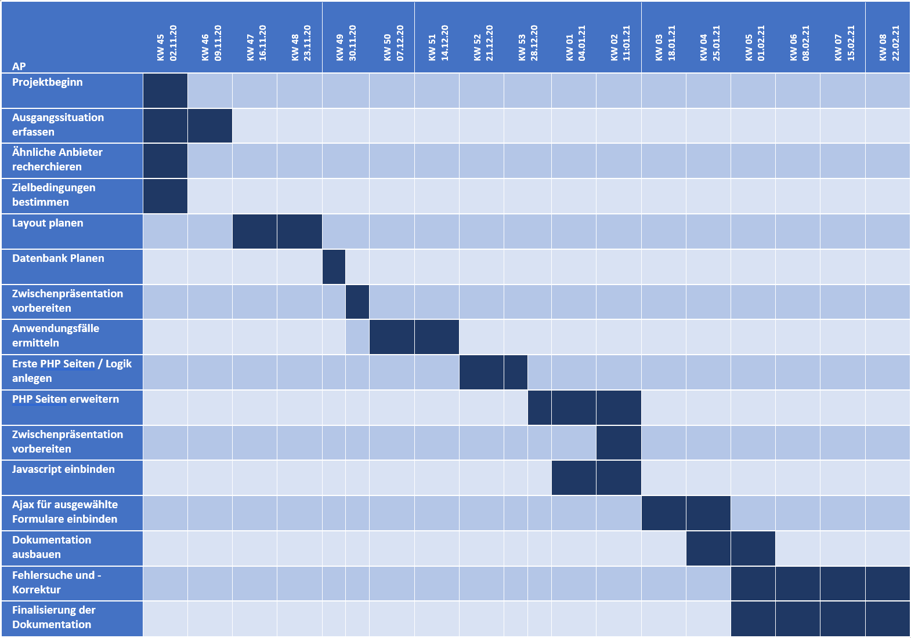

Einleitung
Ausgangssituation
Bei „Mask Your Face“ handelt es sich um ein derzeit mittelständisches Unternehmen. Das Unternehmen verkauft Masken in verschiedenen Kategorien (Muster-Masken, Logo-Masken sowie Motiv-Masken). Eine genaue Zielgruppe für das Unternehmen
gibt es nicht, da die Masken von allen Personenkreisen getragen werden können.
Das Maskensortiment lässt sich derzeit in drei verschiedene Marken aufgliedern:
- „MaskenBuildner“
- „Ilon Mask"
- „Masken Boys“
Aus aktueller Sicht ist nicht geplant weitere Marken aufzunehmen, es ist jedoch nicht auszuschließen, dass in Zukunft weitere Marken hinzugenommen werden.
Um den Kundenkreis weiter ausbauen zu können, soll für das Unternehmen ein Webshop geplant und implementiert werden.
Zielbestimmung
Das umzusetzende System soll im Wesentlichen von Gästen, Kunden sowie von dem Administrator der Seite genutzt werden.
Die Gäste sollen generellen Einblick auf das Sortiment haben und sich ggf. anmelden / registrieren können. Kunden sollen - ebenso wie Gäste - das Sortiment einsehen, aber auch Käufe tätigen können.
Der Administrator muss die Produkte einsehen und verwalten können.
Wichtig hierbei ist, dass im aktuellen Zustand das Lager nicht berücksichtigt werden soll.
Muss-Kriterien
Unterstützung der Gäste
NutzerverwaltungDas System muss den Gästen die Möglichkeit geben:
- sich einen Account anzulegen
- sich am System anzumelden
Das System muss den Gästen die Möglichkeit bieten
- alle Produkte einzusehen
Unterstützung der Kunden
NutzerverwaltungDas System muss den Kunden die Möglichkeit bieten
- sich vom System abzumelden
- die eigenen persönlichen Daten zu ändern
Das System muss den Kunden die Möglichkeit bieten
- alle Produkte einzusehen
Das System muss den Kunden die Möglichkeit bieten
- Produkte zum Warenkorb hinzuzufügen
- Produkte aus dem Warenkorb zu entfernen
- eine Bestellung mit den Produkten im Warenkorb zu tätigen
Unterstützung des Administrators
NutzerverwaltungDas System muss dem Administrator die Möglichkeit bieten
- sich abzumelden
- Benutzerkonten freizuschalten
- Benutzerkonten zu sperren
- Benutzerpasswörter zurückzusetzen
Das System muss dem Administrator die Möglichkeit bieten
- alle Produkte einzusehen
- neue Produkte ins System einzustellen
- bestehende produkte zu bearbeiten
- Produkte bei Bedarf auszublenden
Wunsch-Kriterien
Es besteht der Wunsch in einer späteren Ausbaustufe weitere Funktionen hinzuzufügen bzw. zu berücksichtigen. Hierzu zählen:
- Möglichkeiten zum geplanten Durchführen von Aktionen (Rabattaktionen mit Gutscheincodes, zeitlich Begrenzte Preisreduzierungen etc.)
- Planen der Inhalte, die auf der Startseite präsentiert werden sollen
- Möglichkeit für Auswahl einer Bezahlmethode beim Kauf
- Möglichkeit getätigte Käufe zu stornieren
Abgrenzungskriterien
Das System soll explizit nur einen Online Shop darstellen, daher soll es keine Implementierung des Lagers geben. D. h.:
- Produkteingänge sollen nicht über das System eingetragen und eingesehen werden können
Recherche
In Vorbereitung auf die Zielbestimmungen wurde zunächst eine Analyse durchgeführt, um zu planen, welche Funktionen für den Onlineshop essenziell sind. Hierfür wurden einige online-Shops aus der Textil / und Maskenbranche entsprechend herausgesucht und auf positive, sowie negative Aspekte untersucht. Die relevantesten Onlineshops dieser Recherche sind nachfolgend aufgelistet.
Maskenmadeinwaldkraiburg
Shopseite - Maskenmadeinwaldkraiburg| Positive Aspekte | Negative Aspekte |
|---|---|
| folgende Navigationsleiste | zu helle Schrift in Navigationsleiste |
| sauber wirkende Produktanordnungen in Kacheln |
Schutzmasken-Onlineshop
Shopseite - Shutzmasken Onlineshop| Positive Aspekte | Negative Aspekte |
|---|---|
| dem Bildlauf folgende Navigationsleiste, die sich beim Herunterscrollen verkleinert | das Banner passt sich – vor allem bei größeren Bildschirmen nicht sauber in die Seite ein |
| Produktspotlight im „Header“ der Website | |
| angenehme Farbwahl, gute Kontraste (u. A. Schrift sehr gut lesbar) | |
| beim Herunterscrollen wird ein „Nach oben“ – Button sichtbar |
Vanlaack
Schopseite - Vanlaack| Positive Aspekte | Negative Aspekte |
|---|---|
| angenehme, einfache Farbwahl | die Navigationsleiste folgt dem Bildlauf nicht |
| die Filterübersicht passt sich je nach Zoom an (bei geringem Platz nach Links und Rechts befindet sich die Filterleiste über den Produkten) | aufdringlicher „überblenden“ Effekt bei Mausover der Produkte |
| gleichartig wirkende Produktdesigns | kein „Nach Oben“ Button vorhanden |
| Anordnung der Produktkacheln ist variierbar |
Stylemask.at
Shopseite - Stylemask| Positive Aspekte | Negative Aspekte |
|---|---|
| angenehme Farbgebung | zum Teil unpassend gewählt wirkende Bildausschnitte für Produkte |
| Navigationsleiste folgt dem Bildlauf | Spotlight auf Startseite, der genutzt werden kann, um durch einige Produkte zu schauen |
| saubere Gliederung von Testen durch klare Abschnittstrennung |
fala-onlineshop
Shopseite - Fala-onlineshop| Positive Aspekte | Negative Aspekte |
|---|---|
| saisonal Wechselndes Hintergrundbild der Seite | überladen wirkende Website (sehr viel Text, sehr umfangreiche Navigation) |
| kein Mobiles Design vorhanden | |
| sehr unruhige, altmodisch wirkende und nicht immer zum Hintergrund passende Farbgebung |
Modern Mask
Shopseite - Modern Mask| Positive Aspekte | Negative Aspekte |
|---|---|
| einfache Farbgebung | sehr viel verschenkter Platz |
| Navigationsleiste hebt aktuell besuchte Seite hervor | Produktbilder wirken zu verschieden |
| Navigationsleiste folgt dem Bildlauf nicht |
Coronabremser
Shopseite - Coronabremser| Positive Aspekte | Negative Aspekte |
|---|---|
| einfache Farbgebung | unpassend wirkende Produktbilder (z. T. seltsam positioniert, zum Teil zu verschieden wirkende Produktausschnitte) |
| keine einheitlichen MouseOver Effekte (z. T. Zoom, Fade oder beides kombiniert) | |
| Positionierungen innerhalb der Navigationsleiste wirken ungewohnt |
Elbenwald
Shopseite - Elbenwald| Positive Aspekte | Negative Aspekte |
|---|---|
| angenehme Farbwahl | Startseite wirkt überladen |
| Einkaufswagen öffnet sich direkt auf der Seite, ohne extra Seite zu laden | Navigationsleiste folgt dem Bildlauf nicht |
| bei Produkten kann via Schaltfläche direkt zum nächsten und zum vorherigen Produkt in der Liste gesprungen werden | kein "nach oben" Button vorhanden |
Erkenntnisse aus der Recherche
Aufgrund der Seitenanalyse haben sich einige Aspekte ergeben, die entsprechend bei der Planung und Umsetzung des Shops vermieden oder berücksichtigt werden sollten:
| Zu vermeidende Aspekte | Zu berücksichtigende Aspekte |
|---|---|
| unruhige Farbgebung (z. B. Neonfarben) | Produktliste übersichtlich halten |
| inhaltlich überladene Seiten | Navigation dem Bildlauf folgen lassen |
| zu große / zu kleine Ansichten vermeiden | "Nach oben" Button einbauen |
| unbewegliche Navigationsleiste | für Smartphone und Desktop auslegen |
| überlappende Icons | im Schema eines Layouts bleiben |
| Platz des Browserfenster ausnutzen, ohne zu aufdringlich zu wirken | |
| möglichst selbsterklärende Icons nutzen | |
| Inhalte mittig zentrieren |
Allgemeines Seitenlayout
In Vorbereitung auf das Design der Webseite wurden im Anschluss an die Recherche zunächst einige Mockups für verschiedene Seiten erstellt, die während des Entwicklungsprozesses als grobe Vorlage genutzt werden sollten
Startseite
Angebote
Produktansicht
Warenkorb
Login
 Login - Mobile Ansicht
Login - Mobile Ansicht
Design
Design der Webseite
Farbauswahl
Um den Nutzern ein angenehmes Erlebnis auf der Website zu ermöglichen haben wir einige Zeit nach stimmmigen Farben gesucht die gleichzeitig auch nicht ablenken von dem Produkt welches wir präsentieren wollen. Die Farbauswahl von einer Mischung aus einem weißen Hintergrund, schwarzem Header und grauen Elementen mit orangenen Highlights kam uns stimmig vor und einige Beispiele von großen Marken zeigen dass diese Kombination an Farben sehr gut zusammen passt wie zum Beispiel die Motorradmarke KTM oder Werkzeugausstatter Fiskars.
Design der Produktbilder
Damit die Produktbilder allesamt gleichartig / in sich stimmig aussehen, wurden die Produktbilder mithilfe von Blender modelliert.
Hierbei ist das Grundsetup stets gleich:
- hölzerne Büste mit Maske
- einfarbige Ziegelsteinwand im Hintergrund
- Mask Your Face Wanddeko im Hintergrund
- kleine, grüne Pflanze neben der Holzbüste
Um einen möglichst hohen Detailgrad zu erreichen wurde die Render-Engine "Cycles" genutzt. Damit das Produkt in den Vordergrund gerückt wird, wurde zum einen eine Drei-Punkt Beleuchtung gewählt:
- normale Lichtquelle von oben Links
- abgeschwächte Lichtquelle von unten Rechts (um Schatten auszuleuchten)
- sehr starke Lichtquelle hinter dem Object als Spotlight in Richtung Kamera gerichtet, um die Konturen hervorzuheben
Zusätzlich wurde im Hintergrund - zumindest für die Hauptansicht - das Logo "Mask Your Face" als Wanddekor befestigt. Da das Bild somit rechts relativ voll und links relativ leer war, wurde zusätzlich noch eine Pflanze modelliert und im linken Part des Bildes ausgerichtet.
Da das Bild durch Pflanze und Logo zwar ausgefüllter, aber auch unruhiger wirkte, wurde zusätzlich noch der Fokus der Kamera so eingestellt, dass die Maske fokussiert wird und somit die Pflanze und der Hintergrund leicht unscharf werden.
Für die Produkte wurden drei generelle Ansichten ausgewählt:
- Ansicht von oben rechts
- Frontale
- Seitenansicht
Die Ansicht von oben rechts stellt hierbei jeweils die Vorschaubilder für die Produktkacheln dar. Bei der Frontalen wurde das Logo ausgeblendet, da dieses sonst zu aufdringlich wirkt. In der Seitenansicht sind weder die Pflanze, noch das Logo sichtbar.
Um eine möglichst große Produktvielfalt mit möglichst "geringem" Aufwand zu ermöglichen, wurde bewusst darauf verzeichtet mehrere Farbvarianten eines Produktes in einer Auflistung zusammenzufassen. Für die verschiedenen Muster wurden Texturen von 3D Textures genutzt
Seiten
Allgemeine Navigationsstruktur
Um die Navigation auf der Webseite zu veranschaulichen dient folgende Darstellung. Hierbei gilt folgendes zu beachten:
- Orange eingefärbte Rechtecke sind in der Navigation gelistet
- Gelb eingefärbte Rechtecke sind als Unterpunkte in der Navigation gelistet
- Pfeile ohne Beschriftung leiten direkt weiter
- Beschriftungen an Pfeilen stellen Bedingung und Übergabe dar. Die Übergabe wird hierbei mit "|" von der Bedingung abgetrennt. Wenn kein "|" Symbol vorhanden ist, gibt es lediglich eine Bedingung
- Blau eingefärbte Rechtecke sind über den Footer erreichbar
- Rechtecke mit gestrichelter Umrandung stellen lediglich Referenzierungen dar, um die Übersicht nicht unnötig durch überkreuzende Pfeile zu reduzieren
- Rechtecke, die eine Bedingung an abgehenden Pfeilen stehen haben, oder von denen kein Pfeil wegführt, sind aufrufbare Seiten. (Ausnahme: "Zufälliges Produkt")
Seitenbestandteile
Navigation
Die Navigation ist auf jeder erreichbaren Seite sichtbar. Für die Mobile Ansicht wird die Navigation verkleinert und bei einem Klick auf "Navigation" ausgeklappt
Abhängig davon, wie der aktuelle Login-Zustand ist, wird die Navigationsleiste in drei verschiedenen Varianten angezeigt. Die Navigationsleiste enthält folgende Punkte:
- Startseite
-
Produkte
- Alle Artikel
- Unsere Marken
- Zufälliger Artikel
- Login (Nur für ausgeloggte Nutzer sichtbar)
- Logout (Nur für eingeloggte Nutzer sichtbar)
- Warenkorb (Indikator zeigt an, wie viele Artikel sich im Warenkorb befinden. Ab 100 wird "+99" angezeigt
-
Administration (Nur für Admin sichtbar)
- Mein Konto
- Produkt anlegen
- Benutzer verwalten
- Mein Konto (Nur für normale Nutzer sichtbar)
- About Us
Um einen gleichen Funktionsumfang für Nutzer ohne aktiviertes Javascript zu bieten, wird das Ausklappen der Navigationsleiste via CSS geregelt. Um bei einem Klick auf "Navigation" oder auf eines der Untermenüs die Untereinträge anzuzeigen, wurde eine Checkbox verwendet, die durch anklicken des zugehörigen Labels aktiviert bzw. deaktiviert wird
Nutzer mit aktiviertem Javascript werden insofern unterstützt, dass es nicht möglich ist mehrere Unterkategorien zeitgleich auszuklappen. Sobald eine Unterkategorie ausgeklappt wird, werden alle anderen Unterkategorien automatisch eingeklappt. Das hat den Vorteil, dass hierbei der Bildschirm nicht komplett von der Navigationsleiste bedeckt wird.
Nach oben Button
Der Nach oben Button bringt den Benutzer bei Aktivierung zum Seitenanfang zurück.
Nutzung von JavascriptFür Nutzer ohne aktives Javascript ist der Button permanent sichtbar und springt mittels Anker #top ohne fließenden Übergang zurück zum Seitenanfang. Wenn Nutzer Javascript aktiviert haben, wird der Button erst eingeblendet, sobald der Nutzer ein Stück weit gescrollt hat. Zusätzlich erfolgt der Sprung zum Seitenanfang fließend und nicht sprungartig.
Produktkacheln
Die Produktkacheln haben verschiedene Zustände. Ist ein Produkt sichtbar, so wird das Vorschaubild farbig angezeigt und mit einer orangefarbenen unteren Rahmenlinie betont. Zudem wird ein "Zum Warenkorb hinzufügen" Button angezeigt. Ist ein Produkt hingegen ausgeblendet - also nur für Administratoren sichtbar - wird das Bild in Graustufen dargestellt und mit einer grauen Rahmenlinie unterstrichen. Zudem wird hierbei für eine intuitivere Kennzeichnung der Warenkorb - Button durch ein geschlossenes Auge ersetzt.
Nutzung von JavascriptNutzer, die Javascript aktiviert haben, profitieren davon, dass die Produkte ohne Neu-Laden der gesamten Seite in den Warenkorb gelegt werden können. Wenn dahingegen kein Javascript aktiviert ist, wird die gesamte Seite neu geladen. Um dem Nutzer hierbei zumindest zu helfen ein wenig die Orientierung zu behalten, springt die Seite nach dem Klick auf den Warenkorb Button zum DOM-Objekt mit der ID des angeklickten Produktes.
Footer
Der Footer ist in 3 Teile untergliedert. Im ersten Abschnitt befindet sich der Name der Firma und was diese eighentlich macht. Dann ist in dem Bereich auch der Link zum Impressum und zur Dokumentation. Im Bereich des zweiten Abschnittes werden die Inhaber der Website namentlich genannt. Der dritte und letzte Abschnitt beinhaltet die Anschrift, in dem Fall eine fiktive, unter der die Inhaber der Seite erreichbar sind.
Benachrichtigungen
Um dem Nutzer in bestimmten Situationen zu benachrichtigen wurden schließbare Benachrichtigungen eingefügt. Die Benachrichtigungen sind farblich kodiert, um dem Benutzer bereits anhand der Farbe zu zeigen, worum es in der Nachricht geht. Es werden folgende Farben unterschieden:
- rot (Fehlermeldungen)
- gelb (Warnmeldung)
- grün (Erfolgsmeldungen)
Die Warnmeldungen werden dem Nutzer hauptächlich auf den Seiten angezeigt, auf denen der Benutzerkomfort maßgeblich unter der Deaktivierung leidet. Bzw. die Funktionalität "eingeschränkt" ist. Beispiele hierfür sind der Produktspotlight auf der Startseite sowie die Produktgalerie auf der Produktansicht, die nicht funktionieren, wenn Javascript deaktiviert ist.
Damit Benutzer - egal ob mit, oder ohne Javascript - die Meldungen ausblenden können, wurde hierfür eine unsichtbare checkbox genutzt, die den zugehörigen Nachrichtendialog bei Klick aud das Kreuz versteckt.
Allgemeine Seiten
Startseite
Auf der Startseite werden in einem Spotlight die vier zuletzt hinzugefügten Artikel angezeigt. Zusätzlich werden darunter 3 in der Datei "config\indexProductConfiguration.txt" angegebene Produkte gelistet. Sollte eines der Produkte nicht gefunden werden, so wird ein zufälliges Produkt angezeigt. Darunter befindet sich eine weitere Reihe an Produkten. Für diese Reihe werden drei zufällige Produkte ausgewählt.
Nutzung von JavascriptDer Spotlight auf der Startseite wurde mit Javascript umgesetzt. Damit Nutzer ohne aktives Javascript nicht bemerken, dass der Spotlight normalerweise mehrere Produkte anzeigt, wird für ohne Javascript lediglich das erste Produkt angezeigt. Sowohl der "Weiter"- als auch der "Zurück"-Pfeil werden hierfür ausgeblendet.
Impressum
Im Impressum sind lediglich einige allgemeine rechtliche Informationen gelistet.
About Us
Die About Us Seite gibt dem Nutzer einen Hintergrund zur Idee und den Köpfen dahinter.
Produktseiten
Alle Produkte anzeigen
"Alle produkte anzeigen" verbindet sowohl die Auflistung aller Produkte, als auch die Such-, Sortier- und Filterfunktion. In der Desktop Ansicht werden die Produkte in Reihen untereinander angezeigt, während in der Mobilen Ansicht alle Produkte untereinander dargestellt werden. Die Filterleiste wird in der Desktopansicht schmal am linken Bildschirmrand dargestellt. In der mobilen Ansicht wechselt die Filterleiste zu einer horizontalen Filterleiste, die standardmäßig eingeklappt ist und vom Nutzer ausgeklappt werden kann. Ähnlich wie bei der Navigationsleiste kommt auch hier eine Checkbox zum Einsatz, sodass der User kein Javascript benötigt.
Für normale Nutzer und nicht angemeldete Nutzer sind lediglich Produkte sichtbar, die nicht als "versteckt" angelegt wurden. Wenn der Nutzer Administrator ist, werden auch versteckte Produkte angezeigt. Anstelle eines "Zum Warenkorb hinzufügen" Buttons haben versteckte Produkte ein geschlossenes Auge als Symbol am unteren rechten Bildrand. Zusätzlich wird bei versteckten Symbolen das Vorschaubild in Graustufen dargestellt und der Untere - normalerweise orangefarbene - Rand ebenfalls grau abgebildet.
Die Suchfunktion bietet dem Nutzer die Möglichkeit gezielt nach Artikeln zu suchen. Hierfür wird jeder mit Leerzeichen getrennte Suchbegriff in dem Namen, der Beschreibung und der Catchphrase der Produkte gesucht. Die Suchleiste kann maximal 200 Zeichen beinhalten. Um - zumindest ein Stück weit - abzusichern, dass diese 200 Zeichen nicht überschritten werden, wird vor dem Absenden der Suche (für Nutzer mit aktivem Javascript) geprüft, ob die eingegebene Suche die Zeichenanzahl überschreitet und ggf. auf 200 Zeichen gekürzt. Für die Suche selbst werden vor der Bildung der Abfrage alle doppelten Begriffe aus dem Suchstring entfernt.
Der Nutzer hat zusätzich die Möglichkeit Produkte zu filtern. Hierbei stehen die Möglichkeiten nach Marken, Produktkategorien, Mindestpreis sowie Höchstpreis zu filtern zur Verfügung. Zusätzlich kann der Nutzer die Artikel noch nach Produktbezeichnung, Preis und Einstelldatum (jeweils auf- und absteigend) sortieren.
Nutzung von Javascript
Die Nutzung der Produktseite unterscheidet sich für Nutzer mit aktivem Javascript von der für Nutzer ohne aktives Javascript. Bei aktiviertem Javascript können - ohne Neuladen der gesamten Seite - weitere Produkte via Ajax nachgeladen werden. Nutzt der
Nutzer die Suche oder die Filterfunktion, so werden ebenfalls nur die Produkte nachgeladen. Zusätzlich wird die Adresse mit den entsprechenden Get-Parametern ausgestattet, sodass ein "Weitersenden" der Suchergebnisse problemlos
möglich ist.
Für das Nachladen der Produkte werden lediglich die relevanten Informationen vom Server angefordert. Die Produktkacheln baut der Client hierbei mithilfe von Javascript aus einem erhaltenen JSON-String selbstständig zu einer
Kachel zusammen. Hierfür verwendet er eine im Body versteckte "Prefab"-Kachel, die unbefüllt ist.
Pro Produktseite werden nicht alle Artikel angezeigt. Mithilfe der Seitenleiste am unteren Bildschirmrand kann der Nutzer ohne aktivieres Javascript zwischen den produktseiten navigieren. Aktuell werden pro Produktseite 20 Produkte angezeigt. Die Anzahl der anzuzeigenden Produkte kann in der Datei "config/init.php" angepasst werden
Unsere Marken
Unter "Unsere Marken" werden alle Hersteller mit jeweils drei zufälligen, dazugehörenden Produkten aufgelistet. Für die Desktopansicht sind die Produkte hierbei nebeneinander aufgelistet. Wenn der Nutzer die Seite in der mobilen Variante betrachtet, werden lediglich die Herstellernamen untereinander angezeigt. Sobald der Nutzer auf den Namen eines Herstellers klickt, werden drei zufällige Produkte angezeigt.
Am Ende der jeweiligen Auflistung der Produkte befindet sich eine Schaltfläche "Mehr anzeigen". Sobald der Nutzer diese Betätigt, wird er zur Seite "Alle Produkte" weitergeleitet. Hierbei wird dann der Filter für die Hersteller auf den gewünschten Hersteller gesetzt, sodass nur die Produkte des ausgewählten Herstellers angezeigt werden.
Produktansicht
Die Seite "Produktansicht" wird durch den Klick auf eine Produktkachel, den Produktspotlight auf der Startseite oder die Miniaturvorschau im Warenkorb erreicht. Der Benutzer wird zur 404 Seite weitergeleitet wenn das aufgerufene Produkt nicht existiert, oder wenn der Nutzer kein Administrator ist und das Produkt als versteckt markiert wurde.
Auf der Seite wird eine Bildgallerie angezeigt. Es ist immer das erste Bild groß dargestellt, während die weiteren Bilder unterhalb des Bildes als Vorschau angezeigt werden. Bei Klick auf das jeweilige Vorschaubild wird das ausgewählte Bild größer dargestellt.
Ähnlich der Produktauflistung befindet sich auch auf dieser Seite ein "Zum Warenkorb hinzufügen" Button am unteren rechten Rand eines Bildes. Sollte das Produkt versteckt sein, wird stattdessen ebenfalls ein geschlossenes Auge angezeigt. Zusätzlich haben Administratoren die Möglichkeit zur Seite "Produkt bearbeiten" zu gelangen, indem sie den Button links neben dem Auge / Warenkorb anklicken.
Nutzung von JavascriptDie Produktanzeige hat zwei Anwendungen für Javascript.
Die Bildergallerie wird mithilfe von Javascript gesteuert. Nutzer, die kein Javascript aktiviert haben bekommen dennoch ein größeres Bild sowie kleinere Vorschaubilder darunter angezeigt.
Um die Produktbeschreibung nur bei Bedarf aufzublenden, können Javascript Nutzer eine Schaltfläche am Unteren Rand des Textes bzw. der Textvorschau klicken, um den Text vollständig sichtbar zu machen. Für Nutzer ohne Javascript wird der Text stets vollständig angezeigt.
Zufälliges Produkt anzeigen
Über "Zufälliges Produkt anzeigen" wird lediglich die "Produktansicht" Seite aufgerufen. Anstelle eines Zahlenwertes wird der GET-Parameter pid hierbei jedoch auf "random" gesetzt, was dazu führt, dass ein zufälliger Artikel aus der Datenbank geladen wird.
Administrative Seiten
Produkt anlegen
Mithilfe der Produkt anlegen Seite, ist es Nutzern möglich neue Produkte anzulegen. Anforderung ist hierfür, dass der angemeldete Nutzer die Rolle "Administrator" besitzt. Nutzer, die nicht angemeldet sind werden auf die Login-Seiter weitergeleitet, während Nutzer ohne die Rolle "Administrator" auf die 403 Fehlerseite weitergeleitet werden
Für die Anlage neuer Produkte können folgende Daten angegeben werden:
- Produktbilder (mindestens 1)
- Produktbezeichnung
- Catch Phrase
- Produktbeschreibung
- Preis
- Marke
- Kategorie
- Versteckt (Sichtbarkeit für normale Nutzer)
Es muss für die Anlage eines neuen Produktes mindestens ein Bild ausgewählt werden. Zudem müssen die ausgewählten Bilder die Dateiendung .png oder .jpeg besitzen und dürfen eine maximale Dateigröße von 3MB nicht überschreiten
Die Konfiguration hierfür befindet sich unter "config/imageSettings.php" Um zu vermeiden, dass vor allem in der Produktauflistung zu große Bilddateien die Bandbreite zu stark strapazieren, wird beim Upload Prozess von jedem
Bild ein Thumbnail mit einem Bruchteil der Originalgröße generiert. Pfade für Thumbnails sowie Produktbilder befinden sich ebenfalls in der Datei "imagesetting.php". Um die Flexibilität zu erhöhen, wird lediglich ein relativer
Pfad in der Datenbank gespeichert. So ist es im Nachhinein leichter die Bilder ohne Änderung der Datenbank in einen anderen Ordner zu verschieben.
Nutzer von Javascript profitieren insofern von der Seite, als dass bereits vor dem Absenden des Formulars geprüft wird, ob alle Angaben korrekt sind. Fehlerhafte Felder werden anschließend rot markiert und zeigen eine Fehlerbeschreibung bei Mouseover an. Für Nutzer, die kein Javascript aktiviert haben, wird ebenfalls eine Fehlerbeschreibung angezeigt. Allerdings oberhalb der Eingabefelder und erst nach Absenden des Formulars. Zudem werden die Hochgeladenen Bilder zurückgesetzt.
Zusätzlich wird mithilfe von Ajax geprüft, ob bereits ein Produkt mit dem geplanten Namen des neu anzulegenden Produktes in der Datenbank existiert. Sollte dies der Fall sein, wird auch hier das Formular nicht abgeschickt und stattdessen eine Hinweismeldung bei Mouseover gegeben.
Produkt bearbeiten
Der Punkt "Produkt bearbeiten" ähnelt sehr stark dem Punkt "Produkt anlegen" Der größte Unterschied besteht darin, dass dem Nutzer alle zu dem Produkt gefundenen Bilder angezeigt werden. Hierbei hat der Nutzer die Möglichkeit Bilder zu Löschen oder umzubenennen. Das vergeben von Bildtiteln dient der Barrierefreiheit, da die Bildtitel im "alt"-Tag zugeordnet werden. Zudem kann der Nutzer neue Bilder hochladen.
Nutzung von JavascriptGenau wie bei der Produktanlage wird auch hier der Nutzer mithilfe von Javascript unterstützt, indem bereits vor Absenden des Formulars geprüft wird, ob die Eingaben valide sind. Sollte dies nicht der Fall sein, so werden die entsprechenden Felder ebenfalls farblich markiert.
Auch hier wird mithilfe von Ajax geprüft, ob der neu zu vergebende Produktname bereits existiert. Sollte er bereits existieren, wird eine Fehlermeldung bei MouseOver angezeigt. (Außnahme hierbei ist, wenn der Produktname nicht geändert wird)
Mein Konto
Die Seite Mein Konto ist eine Besonderheit, denn diese Seite ist Unter- und Hauptseite zugleich. Wenn die Rolle Admin angemeldet ist, wird sie zur Unterseite und für normale Nutzer ist es eine Hauptseite , die sie links von Login/Logout, in der Navbar finden.
Auf der Seite werden die persönlichen Daten dargestellt, es findet sich hier auch eine Verlinkung zu den Unterseiten "Passwort ändern", "Persönliche Daten ändern" und "Adresse ändern". Auch werden alle Bestellungen dargestellt, die durch den angemeldeten Benutzer getätigt wurden, egal ob Admin oder Nutzer.
Passwort ändern
Auf dieser Seite kann der Nutzer sein Passwort ändern
Persönliche Daten ändern
Hier kann jeder Nutzer seine persönlichen Daten ändern und auch vervollständigen.
Adresse ändern
Diese Unterseite dient dazu seine eigene Adresse zu ändern.
Benutzer verwalten
Diese Unterseite ist nur durch die Rolle Admin einsehbar.
Der Admin ist in der Lage Nutzer zu validieren, freizugeben, die Rolle zu ändern und das Passwort zurückzusetzen. Funktionen für die Validierung und die Freigabe sind noch nicht implementiert. Das Passwort kann auf den Standardwert "P@ssw0rd01" zurückgesetzt werden.
Bestellseiten
Warenkorb
Der Warenkorb listet alle Produkte auf, die zuvor dem Warenkorb hinzugefügt wurden. Hierbei kann die Anzahl der Produkte noch im Nachinein verändert werden. Um die Änderung vorzunehmen steht dem Nutzer pro Artikel ein Input vom Typ "Number" zur Verfügung. Um ein Produkt aus dem Warenkorb zu entfernen, muss lediglich die Menge auf 0 oder weniger gesetzt werden. Mithilfe des "Kaufen" Buttons werden angemeldete Nutzer zur Seite "Kauf bestätigen" weitergeleitet. Ist der Nutzer nicht angemeldet, so wird er zum Login weitergeleitet.
Nutzung von Javascript Warenkorb ohne JavascriptIst Javascript aktiviert, so wird mithilfe von Ajax direkt bei Betätigung des jeweiligen "Number"-Feldes die Änderung vorgenommen. Produkte, die aus dem Warenkorb entfernt werden sollen, werden ebenfalls direkt entfernt. Nutzer, die kein Javascript aktiviert haben, bekommen einen weiteren Button pro Produkt angezeigt, mit dem sie die Änderung für das jeweilige Produkt bestätigen können.
Kauf bestätigen
 Kauf bestätigen - Mobile Ansicht
Kauf bestätigen - Mobile Ansicht
Die "Kauf bestätigen" Seite stellt den letzten Schritt zum Kaufabschluss dar. Hier werden noch einmal alle Artikel sowie der resultierende Gesamtpreis und die Adresse des Nutzers angezeigt. In der Desktopansicht werden die Produkte tabellenartig aufgelistet, während in der mobilen Ansicht die Produkte untereinander gelistet werden, um eine bessere Nutzung der Bildschirmgröße zu gewährleisten.
Sobald der Nutzer den "Kaufen" Button anklickt, wird der Kauf abgeschlossen und er wird auf sein eigenes Profil weitergeleietet. Zusätzlich wird ihm eine Erfolgsmeldung mit der Bestellnummer angezeigt.
Anmelden und Registrieren
Login
Auf dieser Seite kann sich der Nutzer mit den passenden Zugangsdaten einloggen oder falls noch nicht vorhanden zur Registrierung weitergeleitet werden.
Logout
Der derzeit eingeloggte Nutzer wird ausgeloggt.
Registrierung
 Registrierung 01 - Mobile Ansicht
Registrierung 01 - Mobile Ansicht
 Registrierung 02 - Mobile Ansicht
Registrierung 02 - Mobile Ansicht
Auf dieser Seite trägt der zu registrierende Nutzer die notwendigen persönlichen Daten ein, diese werden noch auf Vollständigkeit und Korrektheit geprüft. Darauf hin wird ein neuer Nutzer und dazugehöriger Login in der Datenbank angelegt und die Infos werden dort gespeichert für die spätere Anmeldung.
Fehlerseiten
Um diverse Fehler anzeigen zu können, wurden einige Fehlerseiten implementiert:
- 403
- 404 (Zeigt zusätzlich an, ob View oder Controller nicht gefunden)
- 418
Datenbank
ER-Diagramm
 ER DiagrammTabellenmodell
addresses
Die Tabelle "addresses" wird genutzt, um die Adressen der verschiedenen Nutzer zu speichern. Da auch mehrere Nutzer dieselbe Adresse haben können, wurden die Adressen in eine separate Tabelle ausgelagert.
| Attribut | Typ | Länge | Notwendig | Bedingung | Anmerkung |
|---|---|---|---|---|---|
| id | int | - | ja | autoinkrement | |
| street | varchar | 255 | ja | ||
| streetNumber | varchar | 10 | ja | ||
| city | varchar | 60 | ja | ||
| zipCode | varchar | 12 | ja |
users
Die Tabelle users beinhaltet die Informationen der einzelnen Benutzer, einen Verweis auf die Adresse des Benutzers, sowie die Rolle des Benutzers.
| Attribut | Typ | Länge | Notwendig | Bedingung | Anmerkung |
|---|---|---|---|---|---|
| id | int | - | ja | autoinkrement | |
| firstName | varchar | 50 | ja | ||
| lastName | varchar | 50 | ja | ||
| secondName | varchar | 50 | nein | ||
| gender | enum('m','f','u') | - | nein | ||
| phone | varchar | 26 | nein | ||
| addressesID | int | - | ja | FK für addresses | |
| birthDate | date | - | ja | ||
| role | enum('admin','user') | - | nein |
logins
Die Tabelle "logins" beinhaltet die Loginspezifischen Informationen wie password Hash oder die E-Mail Adresse. Zudem sind weitere Attribute enthalten, mit denen die letzte Aktivität des Nutzers überwacht werden kann. (Zumindest zeitlich). Jeder Datensatz enthält eine Referenz auf den zugehörigen Benutzer.
| Attribut | Typ | Länge | Notwendig | Bedingung | Anmerkung |
|---|---|---|---|---|---|
| id | int | - | ja | autoinkrement | |
| validated | tinyint | - | ja | ||
| enabled | tinyint | - | ja | ||
| varchar | 320 | ja | unique | ||
| lastActive | timestamp | - | nein | ||
| lastLogin | timestamp | - | nein | ||
| failedLoginCount | tinyint | - | ja | ||
| passwordHash | varchar | 255 | ja | ||
| passwordResetHash | varchar | 255 | nein | ||
| passwordResetCreatedAt | timestamp | - | nein | ||
| usersID | int | - | ja | FK für users |
orders
Die Tabelle "orders" beinhaltet informationen über abgeschickte Bestellungen. Die Attribute shippingDate sowie cancellationDate sind zunächst nur gelistet, wurden jedoch nicht mit implementiert.
| Attribut | Typ | Länge | Notwendig | Bedingung | Anmerkung |
|---|---|---|---|---|---|
| id | int | - | ja | autoinkrement | |
| shippingDate | timestamp | - | nein | ||
| cancellationDate | timestamp | - | nein | ||
| loginsID | int | - | ja | FK für logins |
orderItems
Mithilfe der Tabelle "orderItems" wird die n:m Beziehung zwischen "orders" und "products" umgesetzt. Das Feld "actualPrice" beinhaltet hierbei direkt den Gesamtpreis für die Bestellposition.
| Attribut | Typ | Länge | Notwendig | Bedingung | Anmerkung |
|---|---|---|---|---|---|
| id | int | - | ja | autoinkrement | |
| productsID | int | - | ja | FK für products | |
| ordersID | int | - | ja | FK für orders | |
| quantity | int | - | nein | ||
| actualPrice | decimal | (8,2) | nein |
products
Die Tabelle products beinhaltet die wesentlichen Informationen für die Produkte, sowie Referenzen auf die Tabellen "vendors" und "categories".
| Attribut | Typ | Länge | Notwendig | Bedingung | Anmerkung |
|---|---|---|---|---|---|
| id | int | - | ja | autoinkrement | |
| productName | varchar | 120 | ja | ||
| catchPhrase | varchar | 150 | nein | ||
| productDescription | varchar | 5000 | ja | ||
| standardPrice | decimal | (7,2) | ja | ||
| categoryID | int | - | ja | FK für categories | |
| vendorID | int | - | ja | FK für vendors | |
| isHidden | tinyint | - | nein |
vendors
Die Tabelle "vendors" enthält lediglich den Namen des Herstellers.
| Attribut | Typ | Länge | Notwendig | Bedingung | Anmerkung |
|---|---|---|---|---|---|
| id | int | - | ja | ||
| vendorName | varchar | 50 | ja |
categories
Die Tabelle "categories" enthält lediglich den Namen der Kategorie
| Attribut | Typ | Länge | Notwendig | Bedingung | Anmerkung |
|---|---|---|---|---|---|
| id | int | - | ja | autoinkrement | |
| categoryName | varchar | 45 | ja |
productImages
Die Tabelle "productImages" dient zum Darstellen der n:m Beziehung zwischen "images" und "products". Durch diese Tabelle ist es möglich jedem Produkt beliebig viele Bilder zuzuordnen.
| Attribut | Typ | Länge | Notwendig | Bedingung | Anmerkung |
|---|---|---|---|---|---|
| id | int | - | ja | autoinkrement | |
| imagesID | int | - | ja | FK für images | |
| productsID | int | - | ja | FK für products |
images
Die Tabelle "images" beinhaltet die Pfadangaben der Bilder. Zu jedem Bild wird ein Bildpfad, sowie ein Thumbnailpfad gespeichert. Zusätzlich kann ein Bildtitel gespeichert werden, dieser wird dann bei darzustellenden Bildern im alt Tag eingetragen.
| Attribut | Typ | Länge | Notwendig | Bedingung | Anmerkung |
|---|---|---|---|---|---|
| id | int | - | ja | autoinkrement | |
| imageName | varchar | 150 | nein | ||
| imagePath | varchar | 256 | ja | ||
| thumbnailPath | varchar | 256 | ja |
Gemeinsame Attribute
Zusätzlich verfügen alle Tabellen über folgende Attribute
| Attribut | Typ | Länge | Notwendig | Bedingung | Anmerkung |
|---|---|---|---|---|---|
| createdAt | timestamp | - | ja | DEFAULT: CURRENT_TIMESTAMP | |
| updatedAt | timestamp | - | nein | ON UPDATE CURRENT_TIMESTAMP |
Rollenmodell / Anwendungsfälle
Grundlegen wurden für das Projekt drei verschiedene Rollen geplant:
- Gast (Besucher, der nicht angemeldet ist)
- Benutzer (angemeldeter Benutzer)
- Administrator (Benutzer mit erhöhten Rechten)
Die Verschiedenen Möglichkeiten / Ansichten der Einzelnen Rollen sind in der Auflistung der einzelnen Seiten genauer erläutert. Nachfolgend werden dennoch noch einmal die verschiedenen Anwendungsfälle gelistet.
Business Use-Case
Business Use CaseKäufe verwalten
Use-Case Benutzer verwaltenBenutzer verwalten
 Use-Case Account erstellen
Use-Case Account erstellen
Produktliste verwalten
Tests & Probleme
Um weitestgehend sicherzustellen, dass das Projekt unter verschiedenen Bedingungen lauffähig ist, wurden verschiedene Browser sowie Monitore in verschiedenen Auflösungen zum Testen und Entwickeln der Webseite genutzt.
Zu den genutzten Browsern gehören:
- Microsoft Edge
- Vivaldi
- Firefox Developer
- Opera
Zudem wurde das System auch unter Linux mithilfe von Xampp getestet, um eventuell auftretende Probleme auf unixoiden Betriebssystemen zu finden und diesen entgegenzuwirken.
Probleme
Bei dem Test auf Linux sind zwei wesentliche Probleme aufgetreten, für die es galt einen Workaround zu finden. Einerseits ist hierbei aufgefallen, dass durch phpmyadmin standardmäßig Tabellen immer in Kleinbuchstaben gespeichert werden. Unter Windows sind hierbei keine Probleme aufgetreten. Da Linux allerdings Case-Sensitiv ist, haben sämtliche Zugriffe auf mit camelCase geschriebene Tabellen nicht mehr Funktioniert. Das Problem wurde gelöst, indem im Base Model die Methode tablename() grundsätzlich nur einen lower-case string zurückliefert.
Ein weiteres Problem im Zusammenhang mit Linux ist bei den Bildern aufgetreten. Da die Pfade - zumindest - relativ in der Datenbank gespeichert wurden, wurde auch das Pfadtrennzeichen des aktuellen Betriebssystems in der Datenbank gespeichert. Da die Bilder alle unter Windows hochgeladen wurden, handelte es sich hierbei um "\". Somit wurden sämtliche Bilder unter Linux nicht mehr angezeigt. Um das Problem zu beheben, ohne die Datenbank zu manipulieren oder die Bilder (ein weiteres mal) erneut einlesen zu müssen, wurde die Image Klasse um einen Magic Getter erweitert, der sämtliche Vorkommen von "/" und "\" im relativen Pfad ausfindig macht und diese durch das Trennzeichen des aktuellen Betriebssystems ersetzt. Somit ist das Projekt auch mit Beispieldaten sowohl für Windows als auch für Unixoide Betriebssysteme lauffähig.
Projektplanung
Meilensteinplan
Um den groben Verlauf des Projektes besser planen zu können, wurde während des Projekts ein Meilensteinplan entworfen.
 Use-Case Produkte verwaltenAuflistung des Zeitbedarfs
| Datum | Aktivität | Person(en) | Dauer |
|---|---|---|---|
| 03.11 | Produktideen sammeln, Produktidee festlegen | John Klippstein, Hannes Lenz, Robin Beck | 1 h |
| 06.11 | Ähnliche Angebote / Webseiten heraussuchen und Bewerten | John Klippstein,Hannes Lenz,Robin Beck | 4 h |
| 06.11 | GitHub repository anlegen, To-Do Listen pflegen | John Klippstein,Hannes Lenz,Robin Beck | 0,5 h |
| 15.11 | Grobe LayoutIdeen ausformulieren, Seitenhierarchie aufstellen, Namen überlegen | John Klippstein,Hannes Lenz,Robin Beck | 3 h |
| 20.11 | Layout Überlegen / Skizzieren | John Klippstein,Hannes Lenz,Robin Beck | 4 h |
| 27.11 | Startseite in html / css umsetzen | John Klippstein | 5 h |
| 27.11 | Startseite in html / css umsetzen | Hannes Lenz | 5 h |
| 27.11 | Startseite in html / css umsetzen | Robin Beck | 5 h |
| 27.11 | Erste Entwürfe Logo | John Klippstein | 2 h |
| 28.11 | ER-Diagramm erstellen | Robin Beck | 0,5 h |
| 29.11 | HTML / CSS der Startseite zusammenführen | John Klippstein | 2 h |
| 03.12 | Erste Zwischenpräsentation vorbereiten | John Klippstein,Hannes Lenz,Robin Beck | 4 h |
| 03.12 | CSS überarbeiten | John Klippstein | 1 h |
| 11.12 | Navigationsleiste überarbeiten (Umstellung auf Checkbox, ohne Javascript) | Robin Beck | 4,5 h |
| 11.2 | Anlage Use-Cases Produktverwaltung | Hannes Lenz | 0,5 h |
| 11.12 | Anlage Use-Cases Kaufverwaltung | John Klippstein | 0,25 h |
| 12.12 | Anlage Use-Cases Nutzerverwaltung | Roin Beck | 0,75 h |
| 13.12 | Fiktive Anbieter und Beschreibungen überlegen | John Klippstein | 1 h |
| 16.12 | MVC Grundgerüst für Projekt implementieren | Robin Beck | 1,5 h |
| 18.12 | Use Cases abstimmen, weiteres Vorgehen besprechen | John Klippstein,Hannes Lenz,Robin Beck | 2 h |
| 19.12 | Login und Registrierung anlegen | Hannes Lenz | 3 h |
| 19.12 | Logo überarbeitet | John Klippstein | 2 h |
| 23.12 | Base Model umsetzen | John Klippstein | 2 h |
| 23.12 | Models für Produktansicht anlegen | Robin Beck | 1 h |
| 24.12 | Funktionalität für Produktansicht, Produktbearbeitung, „Neues Produkt anlegen“ hinzugefügt | Robin Beck | 6 h |
| 27.12 | Dokumentation bearbeiten | Robin Beck | 2 h |
| 27.12 | Dokumentation bearbeiten | Hannes Lenz | 1 h |
| 27.12 | Dokumentation bearbeiten | John Klippstein | 2 h |
| 27.12 | Warenkorb anlegen | John Klippstein | 2 h |
| 27.12 | Bildupload für Produktanlage | Robin Beck | 2 h |
| 28.12 | Überarbeitung Registrierung | John Klippstein | 3 h |
| 29.12 | Aktuellen Fortschritt vergleichen, Login besprechen | John Klippstein,Hannes Lenz,Robin Beck | 3 h |
| 29.12 | Blenderszene für Produktbilder erstellen | Robin Beck | 3 h |
| 29.12 | Produktbearbeitung überarbeiten | Robin Beck | 2 h |
| 30.12 | Produktbilder Rendern / Bearbeiten | Robin Beck | 2 h |
| 30.12 | Produktbearbeitung erweitern | Robin Beck | 2 h |
| 31.12 | Produktsuche / Filterung implementieren | Robin Beck | 2,5 h |
| 01.01 | CSS für Produktanlage anlegen | Robin Beck | 2 h |
| 02.01 | CSS für Produktfilter anlegen | Robin Beck | 2,5 h |
| 02.01 | Javascript für Produktgallery anlegen | Robin Beck | 2 h |
| 07.01 | Fehlerseiten einrichten | Robin Beck | 1,4 h |
| 15.01 | Absprache aktueller Fortschritt, weiteres Vorgehen, Vorbereitung der Zwischenpräsentation | Hannes Lenz,John Klippstein,Robin Beck | 1,5 h |
| 15.01 | Fehlervalidierung mit JS, CSS | Robin Beck | 4,5 h |
| 16.01 | CSS Überarbeitung – Produktkacheln | Robin Beck | 2,5 h |
| 17.01 | Links Überarbeitet | Robin Beck | 0,25 h |
| 17.01 | Fehlervalidierung mit JS, CSS, für die Registrierung | John Klippstein | 3,5 h |
| 18.01 | Layout für Formulare Überarbeitet | Robin Beck | 2 h |
| 22.01 | Besprechung weiteres Vorgehen für das Projekt | Hannes Lenz,John Klippstein,Robin Beck | 1,5 h |
| 22.01 | Hinzufügen der Ajax Funktionalität für „Zum Warenkorb hinzufügen“, CSS Anpassung | Robin Beck | 2,6 h |
| 22.01 | Fehlervalidierung mit JS für Login | Hannes Lenz | 3 h |
| 23.01 | Hinzufügen von Ajax für dynamisches Nachladen / Filtern / Suchen von Produkten | Robin Beck | 5 h |
| 24.01 | Hinzufügen von Ajax für Warenkorb (Änderung der Produktanzahl), Überarbeitung der Produktanzeige | Robin Beck | 2,2 h |
| 25.01 | Umstellung des Requests via Ajax auf POST, Bearbeitung der Dokumentation | Robin Beck | 4 h |
| 26.01 | Erweiterung der Formulare "Produkt anlegen" und "Produkt bearbeiten" um Ajax | Robin Beck | 3 h |
| 27.01 | Ajax Einarbeitung für Registrierung und Produktanlegen | Robin Beck, John Klippstein | 2 h |
| 28.01 | Bearbeitung der Dokumentation | John Klippstein | 2,5 h |
| 28.01 | Erstellen von Testdaten und zusammenführen SQL-Dumps | John Klippstein | 2 h |
| 28.01 | Überarbeitung "Mein Konto" | John Klippstein | 2 h |
| 28.01 | Ausbau der Dokumentation | Robin Beck | 2,5 h |
| 28.01 | Überarbeitung der CSS für Warenkorb, "Unsere Marken" und Kaufbestätigung | Robin Beck | 2 h |
| 29.01 | Abgleich aktueller Stand und Planung des weiteren Vorgehens | Hannes Lenz, John Klippstein, Robin Beck | 1 h |
| 29.01 | Überarbeitung der CSS, hinzufügen von favicon, benutzerdefinierte Checkboxen | Robin Beck | 3 h |
| 29.01 | Diverse kleinere Bugfixes in Javascript / Ajax | Robin Beck | 1 h |
| 30.01 | Diverse CSS anpassungen / kleinere Korrekturen an der DB | Robin Beck | 4,5 h |
| 31.01 | Überarbeitung Footer/CSS/Doku | John Klippstein | 3,5 h |
| 01.02 | Geringfügige CSS Anpassungen, Erweiterung der Doku | Robin Beck | 1,5 h |
| 02.02 | CSS angepasst, Seitenverhältnis für Produktbilder vereinheitlicht, Produktauflistung und Warenkorb in Grid Layout eingepasst | Robin Beck | 3,6 h |
| 03.02 | CSS leicht angepasst, Ajax Bug im Warenkorb behoben | Robin Beck | 0,3 h |
| 04.02 | PHPDoc Kommentare hinzugefügt, Readme an Markdown Syntax angepasst | Robin Beck | 2 h |
| 05.02 | Besprechung aktueller Stand, Festlegung nächster Aufgaben, Terminsetzung nächstes Meeting | Hannes Lenz, John Klippstein, Robin Beck | 2 h |
| 05.02 | Fehlerbhebung | John Klippstein | 5 h |
| 06.02 | Fehlerkorrekturen, CSS Anpassung | Robin Beck | 2,5 h |
| 06.02 | Erweiterung / Umstrukturierung von readme Datei und Dokumentation | Robin Beck | 2,5 h |
| 09.02 | Fehlerbehebung ResetPassword und Geschlechterauswahl | John Klippstein | 3 h |
| 09.02 | Überarbeitung Logout und Fehlerseiten | Robin Beck | 1,5 h |
| 11.02 | Dokumentation | John Klippstein | 2 h |
| 11.02 | Anpassung CSS, Formatierung von Code in accountmanagement, Erweiterung der Dokumentation | Robin Beck | 1,2 h |
| 12.02 | Navbar angepasst, CSS leicht angepasst, Bilder zu Dokumentation hinzugefügt, Meilensteinplan eingebunden | Robin Beck | 1,51 h |
| 13.02 | CSS für CatchPhrase und Cart angepasst, Bilder in Doku angepasst, ER Modell aktualisiert | Robin Beck | 1,1 h |
| 14.02 | CSS ausgedünnt, CSS kommentiert, System auf Linux in Betrieb genommen. Seiten in mobiler und Desktop- Ansicht getestet. Seiten mit und ohne Javascript getestet. | Robin Beck | 4 h |
| 16.02 | Überprüfung der Länge der Eingabe in php und JS umgesetzt. Fehlerbehebungen | John Klippstein | 4 h |
| 18.02 | Fehlersuche, leichte CSS Anpassung, Entfernen von verwaisten debug Ausgaben in der Konsole | Robin Beck | 1,48 h |
| 19.02 | Fehlerkorrektur in Produktsuche, CSS angepasst, Dokumentation überarbeitet. | Robin Beck | 1,5 h |
| 19.02 | Überarbeitung Javascript und About Us | John Klippstein | 2 h |
| 21.02 | Fehlerbehebung in Javascript, Korrektur von Rechtschreibfehlern in der Dokumentation | Robin Beck | 0,6 h |
| 21.02 | Besprechung des aktuellen Projektstandes und der Abschlusspräsentation | Hannes Lenz, John Klippstein, Robin Beck | 1 h |
| 21.02 | Überarbeitung Dokumentation | John Klippstein | 2 h |
| 22.02 | Funktionsprüfung unter Windows / Linux, Fehlerkorrektur | Robin Beck | 2 h |
| 23.02 | Funktionsprüfung, Beheben von Schreibfehlern | Robin Beck | 1 h |